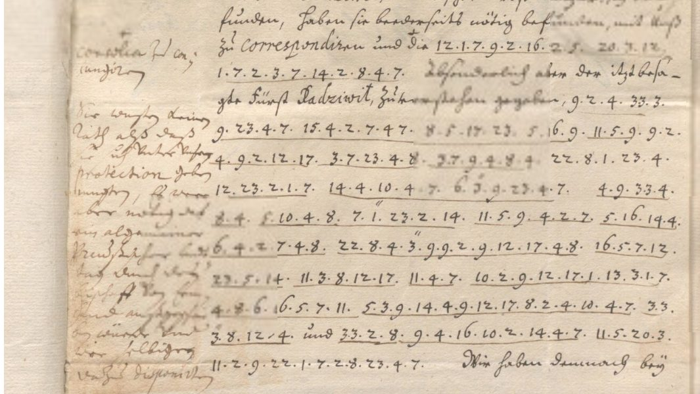

At a glanceKey from adjacent plaintext · partial (93% of the cipher)
- The letters
- Four pieces by the Elector Frederick William of Brandenburg to Count Georg Friedrich of Waldeck (a letter and its postscript from Cöslin, 4 September 1655; a postscript of August; a letter of September) and two letters of Waldeck to the Elector (7 and 14 September), in German with the cipher set among clear words.
- Where
- Gelders Archief, Arnhem, 0370 Heren en graven van Culemborg, inv. nr. 1257, Waldeck’s register of acts 1654–1655, scans 715–819 of 856. Not on DECODE.
- The cipher
- A simple substitution of single letters by the numbers 1–23 and 33, dot-separated; a diaeresis over a number gives an umlaut and a bar doubles a letter. One number in Waldeck’s letter (51) is not a letter and has no value here.
- How the key was found
- The 22 values were found in the letter of 4 September from the clear words around the runs and the name Krockow, frozen, and checked against a summary decipherment written in the margin of scan 819 at the time (196 of its 209 letters in order) and two glosses on scan 797. Waldeck’s letters read with the same key. The order of events rests on the contributor’s record.
- What it says
- The army will be on the Vistula within ten days; ships must be ready in the Haff; the daily need is 24,000 lb of bread, as much beer and forage for 6,000 horses; Danzig refuses passage.
- Credit
- Transcription, key, tests and reading by WAINUT, a Dutch AI company (https://github.com/WAINUTAI), working with AI agents, working with AI agents (pull requests #470 and #471). The contemporary margin note and glosses are credited as the check. The integration check of 12 November 2026 corrected one number and one clear word on the images.
- Still open
- Letters lost in the binding of scans 794, 798 and 788; the clear text of Waldeck’s letters; the number 51; the letter of 17 August 1655 in another code; a book on Waldeck that could be searched only in poor OCR.
01 The letters
The volume is the “Register der acten, uitgegaan van graaf Georg Friedrich, 1654, 1655”: the register of acts issued by Count Georg Friedrich of Waldeck, whom the catalogue calls the Elector’s leading minister and general. The archive’s inventory says it holds numerous letters and drafts, some in cipher, to and from the Elector. The catalogue sweep of 11 November 2026 paged all 856 scans and found cipher on 14 of them, scans 715 to 819. Six pieces, the Elector’s four and Waldeck’s two, use one number cipher, and that is what is treated here.
| Piece | Scans | What it is | Words | Read verbatim |
|---|---|---|---|---|
| c793 | 793–795 | The Elector to Waldeck, Cöslin, 4 September 1655: the body in cipher with clear words | 286 | 260 (90.9%) |
| ps797 | 797–798 | Postscript to it, clear and cipher alternating | 161 | 151 (93.8%) |
| ps717 | 717 (and 715) | A postscript of August 1655, wholly in cipher, signed | 71 | 68 (95.8%) |
| l819 | 819 | A letter of September 1655, about twelve cipher lines under clear lines | 64 | 62 (96.9%) |
| w787 | 787–789 | Waldeck to the Elector, 7 September 1655: six passages | 106 | 99 (93.4%) |
| w813 | 813–814 | Waldeck to the Elector, Königsberg, 14 September 1655: three short runs and a block of twelve lines | 72 | 64 (88.9%) |

Words are counted as scripts/reading.py counts them, clear words included, and only words read verbatim from the signs count as read: a repair, a letter filled from context, a guess and a hole do not. On that strict count the six pieces give 704 of 760 words, or 92.6%, so the extent is partial. Two pieces reach 95% by themselves (ps717 and l819). Of Waldeck’s letters only the cipher passages and the clear words beside them are edited; the clear text between them is not transcribed. The letter of 17 August 1655 (scans 723–724) is in a different code, numbers up to four digits mixed with letters, and is not treated; its catalogue entry stays open.
02 The cipher and its key
Each letter is a number, dot-separated, with the clear words of the letter standing between the runs: a 5, b 10, c 12, d 11, e 4, f 13, g 14, h 17, i 2, k 15, l 16, m 6, n 7, o 1, p 22, r 8, s 9, t 23, u and v 3, w 33 (also written 3.3), x 18, y 19, z 20. A diaeresis over 3 or 1 gives ü or ö; a bar over a number doubles it. There are no nulls and no homophones. The writer of the Elector’s pieces slips now and then (11 for 10 in “bald”, 15 for 16 in “also”, 19 for 14 in “gestatten”, 12 for 11 in “landtag” and in “würde”); each slip is marked in the readings.
The same key reads Waldeck’s two letters to the Elector. Every number in the first is in the key; in the second all but two: 18 (x), which only Waldeck’s “Weixel” shows and which was added to the key, and 51, which is not a letter. It occurs twice (“damit [51] an hand zu gehen”, “ungeneigt [51] beizustehen”) and stands, from the sense, for a person, perhaps the Elector; that is a guess, and it is left as a hole. Two folders came in as one pull request each; because both use this key and the correspondence runs both ways, they are one target here.
03 How the key was found, and the check
The key was found from the letter of 4 September itself, with no key filed and no decipherment used. After the clear words “den von” the run 15.8.1.12.15.1.3.3 fits the name Krockow, and the instruction for a Krockow dated Cöslin, 4/14 September 1655, is printed in Urkunden und Actenstücke VII. With 4 as e, the commonest number, and 4.7 as -en, the common words (das, unsern, Völkern, durch, Stadt, Pferde) gave the rest at once. The key was frozen from that letter alone: 22 values. The clear words around the runs, and an outside name, are plaintext next to the cipher, so the method is key recovered from adjacent plaintext, not from the ciphertext alone.
The check. What is held out is the frozen key, not the clear words that gave it. Scan 819 carries in its margin a summary decipherment of its cipher, in another hand of the time. The frozen key’s mechanical decryption of the 40 cipher groups matches 196 of the note’s 209 letters in order (0.938) and 30 of its 37 words letter for letter; the misses are the note’s own wording (“dero” where the cipher has “unsere”, “dahin” for “dazu”) and the writer’s two slips. Two glosses on scan 797 (“so bald”, “zu dero”) agree at letter ratios 0.83 and 0.77. In the other documents every number is in the frozen key except 18 and 51.
How much this shows. Little beyond the reading itself: the note is a summary of one passage that follows the cipher closely, and a 22-value substitution that reads as German on about 2,470 numbers needs no score to be believed. That the key was frozen before the note was looked at rests on the contributor’s record, one commit per pull request with no outside timestamp; and the catalogue entry of 11 November 2026 had already said that scan 819 “may be a contemporary decipherment”. A statistical check with a German model of the 1640s gives the reading −2.245 per letter against −6.617 for random keys (z 8.5) and at best −4.169 for a key annealed onto the shuffled ciphertext.
Transcription. The cipher was transcribed twice from crops, and the key was already known during pass 1 of most scans and all of pass 2, so the passes are not blind to the plaintext. An AI reviewer who took no part in the solve copied 15 lines blind from the scans, about 190 numbers, and agreed with all of them. The integration check compared 111 more groups, 558 numbers, with the viewer images (scan 819 lines 4–15, ps717 lines 8–14, scan 795 lines 6–14 and the first three runs of 813) and found two errors, both corrected: the last number of line 819.11 is 12, not 13, so the slip reads “lanctag”, and the clear word on 795.06 is “auß”, not “auch”. The rest of c793, ps797, w787 and scan 814 were not compared.
04 The reading
The postscript of August 1655 is wholly in cipher (spelling of the time):
Wir werden also immer, also in suspenso gehalten. Und mus man derhalben tractaten mit den leuten des orts, absonderlich den Weyhern, nicht verbintlich machen, damit man davon nach gelegenheit abtreten kan. Mit Ermlant kan man verfahren. Anderer protection wil man uns nicht gestatten. Mit Elbing kan auf ratification handeln. Den Oberrahten kan man von dem, was in literis enthalten, und fur sie, mit behutsamkeit comuniciren. Unser tropen merchiren.
So We are still being kept in suspense. One must therefore not make treaties binding with the people of that region, especially with the Weihers, so that one can withdraw from them when it suits. With Ermland one can proceed. They will not allow Us any other protection. With Elbing [one] can deal subject to ratification. To the Oberräte one can communicate with caution what is contained in the letters, and what concerns them. Our troops are marching.
The letter of 4 September from Cöslin tells Waldeck that the Elector, with his troops, hopes to stand with the army on the Vistula within ten days, and that Waldeck’s troops are to be there at a place the transcription reads “Nebro”. The ships must be ready in the Königsberg Haff. He names the daily need, about 24,000 lb of bread, as much beer and forage for 6,000 horses; Gerhard Roggen at Danzig and Christoph Melchior are to help; Danzig refuses passage, and von Krockow is sent to treat with the city and the voivodes. The postscript orders patrols of fifty and of five or six horsemen and an entrenchment for about 500 foot on this side of the Vistula. The cipher of scan 819 reports that Prince Radziwill, with the voivode of Marienburg, gave to understand that they saw no course but to place themselves under the Elector’s protection, and that a general Prussian diet should be called by the Bishop of Ermland. Waldeck’s letter of 7 September says the conditions with Sweden could hardly be worse, that he has written to Jacob Weiher, to Elbing and to Danzig, and that Danzig offers ships. On 14 September, from Königsberg, he reports Weiher’s offer of help, boats ordered at Marienwerder, and that Magnus reports from Thorn that the town will defend itself and is not unwilling to help [51]. The people and places are named as the letters give them; this background is not otherwise checked here.
05 What remains uncertain
- Letters lost in the binding. The left-hand pages 794, 798 and 788 lose their line ends: words with letters filled in from context number 21 in c793, 6 in ps797, 6 in w787 and 3 in w813, and there are holes in 798.06–798.08 and 788.20–788.24. The last two sentences of ps797 are thin. Only a new photograph of the opened volume could give them.
- The number 51 in Waldeck’s letter of 14 September, twice: not a letter, from the sense a person.
- Clear words and names. The word before “etwa” on 797.20 is not read; “S{i/c}hweden” in 787.a (2 or 12) is not settled; “Nebro” and “Magnus” are not identified.
- Text not transcribed. The clear text of Waldeck’s two letters, scan 819 lines 1–3 and the clear opening lines of 793.
- The letter of 17 August 1655 (scans 723–724) in another code, numbers up to four digits mixed with letters: no key known; the catalogue entry stays open for it.
- Prior art. One web search and the catalogue vetting found no edition or decipherment, and Urkunden und Actenstücke VII does not print the letter. Erdmannsdörffer’s biography of Waldeck (1869), which draws on the Arolsen archive, was not opened by the contributor; at integration its two online copies were searched as Fraktur OCR for Krockow, Cöslin, Radziwill, Danzig, Marienwerder, Culemborg and Chiffre with no hit, but the OCR is too poor (it finds no Radziwill and no Danzig at all) to exclude a quotation of these letters.
- No person has checked a passage against the image; the transcription, the reading and the checks were made by AI agents.
Full texts
The transcription and the decryption of every document on this page, so that the reading can be used and checked. Short files are shown here; all are in the repository.
Cöslin, 4 Sept 1655, cipher body read in part
The army will be on the Vistula within ten days and Waldeck's troops are to be there; ships ready in the Königsberg Haff; 24,000 lb of bread a day, as much beer, forage for 6,000 horses; Gerhard Roggen at Danzig and Christoph Melchior to help; the artillery pieces to be left behind but the horses brought; Danzig refuses passage, von Krockow sent to treat with the city and the voivodes.
Builds coherent sentences, but under the read bar of 95% of words read as sense (91% here); the holes are marked in the reading.
Transcription
# Labels: scan.line. Numbers dot-separated as written; a space is a visible word gap; clear text in double quotes; # N: = N with a diaeresis (umlaut) over it; N^ = N with a bar (doubling); N? = sign not certain; | = rest of the line # lost in the binding; [..] = note, not text. See SIGN_CONVENTIONS.md. 793.01 "gnaden unterhalten" 9.4.2.7. 11.5.9. 3.3.2.8. 3.7.9.5.7.2.20.1. 793.02 "bey" 3.7.9.4.8.7. 3.1.16.15.4.8.7. 10.4.13."in".11.4.7. ", welche" 793.03 2.17.8.4.7.6.5. [blot] 8.12.17.10.2.9.17."ier." "nach Cößlin fort-" 793.04 "gestellet," 3.3.4.8.11.4.7. 6.1.8.14.4.7. "ge" 16.2.4.10.23.9. 793.05 14.1.23. 3.3.2.11.4.8. "den" 17.2.4.8.5. 3.13.10.8.4.12.17. 793.06 4.7. "und" 3.4.8.17.1.13.13.4.7. "mit" 14.1.23. 16.2.12.17.4.8. 793.07 17.3.16.13.4.4?.7.7.4.8.17.5.16.10.20.4.17.4.7. 23.5.14.4.7. 793.08 "mit" 11.4.8. 5.8.6.4.4. 5.7. "der" 3.3.4.2.9.4.16. 20.3.9. 793.09 23.4.17.4.7. 14.4.14.4.7. "selbige" 20.4.2.23. 33.4.8."det" 793.10 2.17.8. "mit" 4.33.8.4."n". 23.8.1.3.22.22.4.7. "und" 20.33. 793.11 5.8. "bey" 7.4.10.8.1.14. 4.3.3.2.9. "sein" 6.3.9.9.4.7. "Und" 793.12 "weil" 3.7.9. 5.7. 9.12.17.2.13.13.4.7. "zur" 3.10.4.8.13.5.17. 793.13 8.23.5.6.6.4.2.9.23.4.7. 14.4.16.4.14.4.7. 9.1. "werden" 795.01 "dero," 22.13.4.8.11.4. "derselben" 15.1.7.7.4.23. "Ihr" 795.02 5.16.16.4.9.23.3.15.4.10.2.9. 5.3.13.20.3.3.4.19. 795.03 20.3.8.3.15.16.5.9.9.4.7. "und die" 5.8.23. 2.16.16.4.8.2.4. 795.04 22.13.4.8.11.4. 5.7. "die" 3.3.4.2.9.4.16. 6.2.23. 10.8.2.7. 795.05 14.4.7. 10.2.9. "daher" 3.3.1.16.16.4.7. 33.2.8. 9.2.4.11.3. 795.06 8.12.17. 3.1.8. 9.22.5.7. "auß" 22.1.6. 6.4.8.7. 13.1.8.23. 795.07 9.12.17.5. 13.13.4.7. 16.5.9.9.4.7. "die" 11.5.7.20.2.14.4. 795.08 8. "haben" 11.2.13.13.2.12.3.16.23.2.8.4.23. "den" 22.5.9. 795.09 11.3.8.12.17. "ihr" 23.4.8.8.2.23.1.8.2.3.6. "und also auch" 795.10 33.4.7.2.14.4.8. 11.3.8.12.17. "die" 9.23.5.11. 20.3.14.4. 795.11 10.4.7. 3.3.2.8. 9.12.17.2.12.15.4.7. "aber" 3.7.9.4.8.7. 795.12 17.2.7.23.4.8. 22.1.6.6.4.8.2. 9.12.17.4.7. "Hofgerichtsver-" 795.13 "walter, den von" 15.8.1.12.15.1.3.3. 11.5.17.2.7. 3.6.10. 795.14 6.2.23. "der" 9.23.5.11. "und denen" 3.3.1.19. 3.3.1.11.4.7. 795.15 11.4.9.1.8.23.9. "zu" 23.8.5.6?.23.2.8.4.7. "und sein" 14.3. 795.16 23.4.8. 4.8.15.16.4.8.3.7.14. 14.4.3.3.4.8.23.2.14. 794.01 2.17.8. "voriger Unserer verordnung nach dah" | 794.02 "beruhet sein, das" 11.2.4.9.12.17.2.13.13.4. "im" 15.| 794.03 2.14.9.10.4.8.14.4.8.17.5.13.23. 22.5.8.5.23.| 794.04 2.7. "mögen," 11.5.6.2.23. 11.2.4.9.4.16. 10.4.7. 3.3.| 794.05 9.2.4. 14.4.13.1.8.11.4.8.23. "werden," 5.7. "die" 3.3.| 794.06 2.9.4.16. 15.1.6?.6.4.7. 15.1.7.7.4.7. 5.7. 22.8.| 794.07 5.7.23. "wird das" 23.5.14.4.9. 5.7. "die" 3.2.4.8. "und" [gutter; the clear word was read "im" in pass 1] 794.08 20.33.5.7.20.2.14.23.5.3.9.4.7.23. 22.13.3.7.11. 10| 794.09 1.11. 9.1.3.2.4.16. 6.5.5.9. [written in the margin with a + to insert here] 10.2.4.8. "und noch" 33.1.16. 11.8.| 794.10 10.4.8. "auch," 4.8.13.1.8.11.4.8.11.23. "und was" 5.7. 13.| 794.11 2.9.12.17. "und" 9.5.16.20. 11.5.8. 20.3.14.4.17.1.8.4.| 794.12 "wird auch die" 22.8.1.22.[blot].8.23.2.1.7. 14.4. 10.4.| 794.13 "die" 13.3.8.5.14.4. 3.3.2.8.11. 5.3.13. 9.33.4.7.2.14.9.| 794.14 3.13.9.4.12.17.9. 23.5.3.9.4.7.11. 22.13.4.8.11.4.| 794.15 5.8.23.2.16.16.4.8.2.4. "und" 14.4.7.4.8.5.16.9.23.5.| 794.16 "mit" 4.2.7.14.4.9.12.17.16.1.9.9.4.7. 14.4.8.4.12.| 794.17 7.4.23. "werden" 6.3.9.9.4.7. 17.2.4.8.5.3.13.| 794.18 "habet ihr" 5.7. 9.23.5.16.23. 20.3. 6.5.12.17.4.7. 11.| 794.19 14.4.9.23.5.16.23. "das" 15.4.2.7. 6.5.7.14.4.16. | 794.20 "und haben wir an Gerhard Roggen in Danzig, w" | 794.21 "auch Christoph Melchiorn befehl ertheilen lassen," 4.3.| 794.22 17.17.2.4.8.3.7.23.4.8. 4.3.9.4.8.9.23. 20.3. 8.| 794.23 7.11. "zu" 14.4.17.4.7. "bey der" 5.8.23.2.16.16.4.8.| 794.24 4.7.23. 9.23.4.17.4.7. 3.7.9. 10.4.19.11.8.4.19.17.|
Decryption
793.01 gnaden unterhalten sein das uuir unsanizo 793.02 bey unsern uolkern befinden , welche 793.03 ihrenma rchbishier. nach Cößlin fort- 793.04 gestellet, uuerden morgen ge liebts 793.05 got uuider den hiera ufbrech 793.06 en und uerhoffen mit got licher 793.07 hulfeennerhalbzehen tagen 793.08 mit der armee an der uueisel zus 793.09 tehen gegen selbige zeit werdet 793.10 ihr mit ewren trouppen und zw 793.11 ar bey nebrog euuis sein mussen Und 793.12 weil uns an schiffen zur uberfah 793.13 rtammeisten gelegen so werden 795.01 dero, pferde derselben konnet Ihr 795.02 allestukebis aufzuuey 795.03 zuruklassen und die art illerie 795.04 pferde an die uueisel mit brin 795.05 gen bis daher uuollen wir siedu 795.06 rch uor span auß pom mern fort 795.07 scha ffen lassen die danzige 795.08 r haben difficultiret den pas 795.09 durch ihr territorium und also auch 795.10 weniger durch die stad zuge 795.11 ben uuir schicken aber unsern 795.12 hinter pommeri schen Hofgerichtsver- 795.13 walter, den von krockouu dahin umb 795.14 mit der stad und denen uuoy uuoden 795.15 desorts zu tramtiren und sein gu 795.16 ter erklerung geuuertig 794.01 ihr voriger Unserer verordnung nach dah [...] 794.02 beruhet sein, das dieschiffe im k [...] 794.03 igsbergerhaft parat [...] 794.04 in mögen, damit diesel ben uu [...] 794.05 sie gefordert werden, an die uu [...] 794.06 isel kommen konnen an pr [...] 794.07 ant wird das tages an die uier und 794.08 zwanzigtausent pfund b [...] 794.09 od souiel maas bier und noch wol dr [...] 794.10 ber auch, erforderdt und was an f [...] 794.11 isch und salz dar zugehore [...] 794.12 wird auch die prop rtion ge be [...] 794.13 die furage uuird auf swenigs [...] 794.14 ufsechs tausend pferde [...] 794.15 artillerie und generalsta [...] 794.16 mit eingeschlossen gerec [...] 794.17 net werden mussen hierauf [...] 794.18 habet ihr an stalt zu machen d [...] 794.19 gestalt das kein mangel [...] 794.20 und haben wir an Gerhard Roggen in Danzig, w [...] 794.21 auch Christoph Melchiorn befehl ertheilen lassen, eu [...] 794.22 hhierunter euserst zu r [...] 794.23 nd zu gehen bey der artiller [...] 794.24 ent stehen uns beydreyh [...]
Reading
# Elector Frederick William to Count Georg Friedrich of Waldeck, Cöslin, 4 September 1655 (scans 793-795)
Cipher body of the signed letter. Scan 794 is a left-hand page whose line ends run into the binding; letters lost there are holes.
Marks in the block below: `{x/y}` mechanical x read as y; `{+a}` added letter; `[?word]` guess; `{[...]/abc}` letters lost in the binding, filled from context (counted as a guess); `{[...]/}` a line end in the binding where nothing is lost (the word runs on to the next line; counted as a repair); `[...]` hole; `[51]` number not in the key (a code word). Everything else is the mechanical decryption of `transcription_c793.txt` with `key.tsv`, re-spaced; clear words are copied. `uu` (3.3) is written w.
## Text (original spelling, re-spaced and punctuated)
gnaden unterhalten. Sein das wir uns anizo bey unsern volkern befinden, welche ihren march bis hier nach Cößlin fortgestellet; werden morgen, geliebts got, wider den hier aufbrechen, und verhoffen mit gotlicher hulfe innerhalb zehen tagen mit der armee an der Weisel zu stehen. Gegen selbige zeit werdet ihr mit ewren trouppen, und zwar bey Nebro, gewis sein mussen. Und weil uns an schiffen zur uberfahrt am meisten gelegen, so werden ihr voriger Unserer verordnung nach dahin beruhet sein, das die schiffe im Königsberger Haft parat sein mögen, damit dieselben, wann sie gefordert werden, an die Weisel kommen konnen. An proviant wird das tages an die vier und zwanzigtausent pfund brod, soviel maas bier und noch wol drüber auch erforderdt, und was an fleisch und salz darzugehoret. Wird auch die proportion geben: die furage wird aufs wenigste auf sechs tausend pferde, die artillerie und generalstab mit eingeschlossen, gerechnet werden mussen. Hierauf [...] habet ihr anstalt zu machen, dergestalt das kein mangel [...]; und haben wir an Gerhard Roggen in Danzig, wie auch Christoph Melchiorn befehl ertheilen lassen, euch hierunter euserst zu r[...]nd zu gehen. Bey der artillerie [...]ent stehen uns bey drey hundert dero pferde: derselben konnet ihr alle stuke bis auf zwey zuruklassen, und die artilleriepferde an die Weisel mit bringen. Bis daher wollen wir sie durch vorspan auß Pommern fortschaffen lassen. Die Danziger haben difficultiret den pas durch ihr territorium und also auch weniger durch die stad zugeben. Wir schicken aber unsern hinterpommerischen Hofgerichtsverwalter, den von Krockow, dahin, umb mit der stad und denen Woywoden desorts zu tractiren, und sein guter erklerung gewertig.
## Marked reading (line by line)
```marked
793.01 | gnaden unterhalten. Sein das wir uns anizo
793.02 | bey unsern volkern befinden, welche
793.03 | ihren march bis hier nach Cößlin fort-
793.04 | gestellet; werden morgen, geliebts
793.05 | got, wider den hier aufbrech-
793.06 | en, und verhoffen mit gotlicher
793.07 | hulfe {e/i}nnerhalb zehen tagen
793.08 | mit der armee an der Weisel zu s-
793.09 | tehen. Gegen selbige zeit werdet
793.10 | ihr mit ewren trouppen, und zw-
793.11 | ar bey Nebro, gewis sein mussen. Und
793.12 | weil uns an schiffen zur uberfah-
793.13 | rt am meisten gelegen, so werden
794.01 | ihr voriger Unserer verordnung nach dah{[...]/in}
794.02 | beruhet sein, das die schiffe im K{[...]/ön}-
794.03 | igsberger Haft parat {[...]/se}-
794.04 | in mögen, damit dieselben, w{[...]/ann}
794.05 | sie gefordert werden, an die W{[...]/e}-
794.06 | isel kommen konnen. An pr{[...]/ovi}-
794.07 | ant wird das tages an die vier und
794.08 | zwanzigtausent pfund b{[...]/r}-
794.09 | od, soviel maas bier und noch wol dr{[...]/ü}-
794.10 | ber auch erforderdt, und was an f{[...]/le}-
794.11 | isch und salz darzugehore{[...]/t}.
794.12 | Wird auch die prop{+o}rtion gebe{[...]/n}:
794.13 | die furage wird aufs wenigs{[...]/te a}-
794.14 | uf sechs tausend pferde, {[...]/die}
794.15 | artillerie und generalsta{[...]/b}
794.16 | mit eingeschlossen, gerec{[...]/h}-
794.17 | net werden mussen. Hierauf [...]
794.18 | habet ihr anstalt zu machen, d{[...]/er}-
794.19 | gestalt das kein mangel [...];
794.20 | und haben wir an Gerhard Roggen in Danzig, w{[...]/ie}
794.21 | auch Christoph Melchiorn befehl ertheilen lassen, eu{[...]/ch}
794.22 | {h/}hierunter euserst zu r[...]-
794.23 | nd zu gehen. Bey der artiller{[...]/ie} [...]-
794.24 | ent stehen uns bey drey h{[...]/undert}
795.01 | dero pferde: derselben konnet ihr
795.02 | alle stuke bis auf zwey
795.03 | zuruklassen, und die artillerie-
795.04 | pferde an die Weisel mit brin-
795.05 | gen. Bis daher wollen wir sie du-
795.06 | rch vorspan auß Pommern fort-
795.07 | schaffen lassen. Die Danzige-
795.08 | r haben difficultiret den pas
795.09 | durch ihr territorium und also auch
795.10 | weniger durch die stad zuge-
795.11 | ben. Wir schicken aber unsern
795.12 | hinterpommerischen Hofgerichtsver-
795.13 | walter, den von Krockow, dahin, umb
795.14 | mit der stad und denen Woywoden
795.15 | desorts zu tra{m/c}tiren, und sein gu-
795.16 | ter erklerung gewertig.
```Translation
# Translation: Elector Frederick William to Waldeck, Cöslin, 4 September 1655 (cipher body, scans 793-795) English of `reading_c793.md`, with the same holes. [...] = text lost in the binding of scan 794. [... in our] favour. [We let you know] that We are now with Our troops, who have continued their march as far as here to Cöslin; tomorrow, God willing, We will set out from here again, and hope with God's help to stand with the army on the Vistula within ten days. By that time you must be there with your troops, and that at Nebro [place not identified]. And since what matters most to Us is ships for the crossing, you will, in line with Our earlier order, have seen to it that the ships are ready in the Königsberg Haff, so that they can come to the Vistula when they are called for. Of provisions, about twenty-four thousand pounds of bread a day will be needed, as much beer and perhaps more, and the meat and salt that go with it. The proportion will also show it: forage must be reckoned for at least six thousand horses, the artillery and general staff included. For this [...] you are to make arrangements so that there is no shortage [...]; and We have had orders given to Gerhard Roggen at Danzig and to Christoph Melchior to [...] and assist you in this to the utmost. With the artillery [...] We have some three hundred horses: of the artillery you may leave all the pieces behind except two, and bring the artillery horses with you to the Vistula. Up to then We will have them brought on from Pomerania by relays of draught horses. The Danzigers have made difficulties over passage through their territory, and still less will they allow it through the city. But We are sending Our Hinterpommern court administrator (Hofgerichtsverwalter), von Krockow, there, to negotiate with the city and with the voivodes of that region, and await his good report.
P.S. of 4 Sept 1655 read in part
Send out fifty horsemen to find the Elector's march and report; small parties of five or six; build an entrenchment for about 500 foot on this side of the Vistula; ships ready to put the troops across if danger arises.
Builds coherent sentences, but under the read bar of 95% of words read as sense (94% here); the holes are marked in the reading.
Transcription
# Labels: scan.line. Numbers dot-separated as written; a space is a visible word gap; clear text in double quotes; # N: = N with a diaeresis (umlaut) over it; N^ = N with a bar (doubling); N? = sign not certain; | = rest of the line # lost in the binding; [..] = note, not text. See SIGN_CONVENTIONS.md. 797.01 "Auch Wollwürdiger, Hochwollgeborner, Rath," 797.02 "besonders lieber und getrewer, ist hiemit Unser" 797.03 "gnädigster befehl an euch, daß ihr" 9.1. 11.5.16.11. [gloss "so bald"] 797.04 "anbefohlener maßen" 20.3.7.4.11.8.1. [gloss "zu dero"] 33.4.8.11.4.23. 797.05 "an" 14.4.16.5.7.14.4.23. "sein etwa" 13.3.7.13.20.2.14. 797.06 8.4.3.23.4.8. "ausschicken" 3.3.1.16.16.4.23. 3.3.4.16. 797.07 12.17.4. "sich," 3.3.1. "Unser" 6.5.8.12.17. 17.2.7.14. 797.08 4.17.4.23. 4.8.15.3.7.11.2.14.4.7. "und euch," 13.5.16.9. 797.09 "die Uns" 5.7.23.8.4.13.13.4.7. 8.4.16.5.23.2.1.7. 797.10 "bringen und" 5.3.13. "den" 13.5.16. 11.5. 3.3.2.8. "vor" 797.11 "Ihnen" 10.4.8.4.2.23.9. 9.4.2.7. 6.1.12.17.23.4.7. 797.12 "Uns" 13.1.16.14.4.7. 9.1.16.16.4.7. "Ihr kom̄et auch" 797.13 15.16.4.2.7.4. 22.5.8.23.17.4.19.4.7. "etwa von" 797.14 13.3.7.33. 1.11.4.8. 9.4.12.17.9. 8.4.3.23.4.8. "mit" 797.15 "gleicher ordre" 5.3.9.9.12.17.2.15.4.7. "da jeder sich" 797.16 "zugleich" 4.8.15.3.7.11.2.14.4.7. "und von" 5.16.16.4.7. 22.5.8. 797.17 23.17.4.19.4.7. 14.4.3.3.2.9.9.4. "nach" 8.2.12.17.23.3.7.14. 797.18 "einbringen." 2.17.8. 3.3.1.16.16.4.23. "auch" 11.2.9.9.4.2. 797.19 23.9. 5.7.11.4.8. 33.4.2.9.4.16. 4.2.7. 3.3.4.8.12.15. 797.20 "oder" 8.4.9.23.8.5.7.14.4.6.4.7.23. [clear word not read] 4.23.33.5. 797.21 13.3.7.13.17.3.7.11.4.8.23. 20.3. 13.3.9. 20.3.16.4.14.4.7. 797.22 "sein," 3.4.8.13.4.8.23.2.14.4.7. 16.5.9.9.4.7. "damit" 798.01 3.3.2.8. 5.3.13. 5.16.16.4.7. 13.5.16. 11.5.8.| 798.02 10.16.4.2.10.4.7. 15.1.7.7.4.7. 9.1.16.23.4. 9.2| 798.03 11.5.9.4.16.10.9.23. 4.2.7.2.14.4. 14.4.13.5.17.8.| 798.04 3.1.8. "thun," 15.1.7.7.4.23. "ihr die" 3.1.16.15.4.8. "in" | 798.05 17.2.13.13.4.7. "die ihr" 5.7. "die" 17.5.7.11. 20| 798.06 10.4.7. 13.16.4.2.9.9.2.14. "bemühet sein und" [word "fleisig" written above "sein"] 9.| 798.07 2.5. 5.3.14.4.7.10.16.2.15.16.2.12.17. 10.4.19.| 798.08 "haben wollet," 14.4.9.12.17.3.3.2.7.11. "wird" | 798.09 4.8.9.4.20.4.7. 16.5.9.9.4.7. "Ut in lit: Cößlin 4 Sept: i[n] ..." [lin at the gutter] [signed Friedrich Wilhelm]
Decryption
797.01 Auch Wollwürdiger, Hochwollgeborner, Rath, 797.02 besonders lieber und getrewer, ist hiemit Unser 797.03 gnädigster befehl an euch, daß ihr so dald 797.04 anbefohlener maßen zunedro werdet 797.05 an gelanget sein etwa funfzig 797.06 reuter ausschicken uuollet uuel 797.07 che sich, uuo Unser march hing 797.08 ehet erkundigen und euch, fals 797.09 die Uns antreffen relation 797.10 bringen und auf den fal da uuir vor 797.11 Ihnen bereits sein mochten 797.12 Uns folgen sollen Ihr kom̄et auch 797.13 kleine partheyen etwa von 797.14 funw oder sechs reuter mit 797.15 gleicher ordre ausschiken da jeder sich 797.16 zugleich erkundigen und von allen par 797.17 theyen geuuisse nach richtung 797.18 einbringen. ihr uuollet auch dissei 797.19 ts ander weisel ein uuerck 797.20 oder restrangement etwa 797.21 funfhundert zu fus zulegen 797.22 sein, uerfertigen lassen damit 798.01 uuir auf allen fal dar [...] 798.02 bleiben konnen solte si [...] 798.03 daselbst einige gefahr [...] 798.04 uor thun, konnet ihr die uolker in [...] 798.05 hiffen die ihr an die hand z [...] 798.06 ben fleissig bemühet sein und s [...] 798.07 ia augenbliklich bey [...] 798.08 haben wollet, geschuuind wird [...] 798.09 ersezen lassen Ut in lit: Cößlin 4 Sept: i[n] ...
Reading
# Elector Frederick William to Waldeck, P.S. to the letter of Cöslin, 4 September 1655 (scans 797-798)
Two interlinear glosses of the time (so bald, zu dero) stand over the cipher on scan 797; they were not used to build the key (see heldout.txt). Scan 798 loses its line ends in the binding.
Marks in the block below: `{x/y}` mechanical x read as y; `{+a}` added letter; `[?word]` guess; `{[...]/abc}` letters lost in the binding, filled from context (counted as a guess); `{[...]/}` a line end in the binding where nothing is lost (the word runs on to the next line; counted as a repair); `[...]` hole; `[51]` number not in the key (a code word). Everything else is the mechanical decryption of `transcription_ps797.txt` with `key.tsv`, re-spaced; clear words are copied. `uu` (3.3) is written w.
## Text (original spelling, re-spaced and punctuated)
Auch Wollwürdiger, Hochwollgeborner, Rath, besonders lieber und getrewer, ist hiemit Unser gnädigster befehl an euch, daß ihr so bald anbefohlener maßen zudero werdet angelanget sein, etwa funfzig reuter ausschicken wollet, welche sich, wo Unser march hingehet, erkundigen und euch, fals die Uns antreffen, relation bringen; und auf den fal da wir vor Ihnen bereits sein mochten, Uns folgen sollen. Ihr kom̄et auch kleine partheyen, etwa von funf oder sechs reuter, mit gleicher ordre ausschiken, da jeder sich zugleich erkundigen und von allen partheyen gewisse nachrichtung einbringen. Ihr wollet auch disseits an der Weisel ein werck oder restrangement [...] etwa funfhundert zu fus zu legen sein, verfertigen lassen, damit wir auf allen fal darin bleiben konnen. Solte sich daselbst einige gefahrhervor thun, konnet ihr die volker in schiffen, die ihr an die hand zu geben fleissig bemühet sein, und s[...] ia augenbliklich bey [...] haben wollet, geschwind wird [...] ersezen lassen. Ut in lit: Cößlin 4 Sept: i[n] ...
## Marked reading (line by line)
```marked
797.01 | Auch Wollwürdiger, Hochwollgeborner, Rath,
797.02 | besonders lieber und getrewer, ist hiemit Unser
797.03 | gnädigster befehl an euch, daß ihr so {d/b}ald
797.04 | anbefohlener maßen zu{ned/de}ro werdet
797.05 | angelanget sein, etwa funfzig
797.06 | reuter ausschicken wollet, wel-
797.07 | che sich, wo Unser march hing-
797.08 | ehet, erkundigen und euch, fals
797.09 | die Uns antreffen, relation
797.10 | bringen; und auf den fal da wir vor
797.11 | Ihnen bereits sein mochten,
797.12 | Uns folgen sollen. Ihr kom̄et auch
797.13 | kleine partheyen, etwa von
797.14 | fun{w/f} oder sechs reuter, mit
797.15 | gleicher ordre ausschiken, da jeder sich
797.16 | zugleich erkundigen und von allen par-
797.17 | theyen gewisse nachrichtung
797.18 | einbringen. Ihr wollet auch dissei-
797.19 | ts an der Weisel ein werck
797.20 | oder restrangement [...] etwa
797.21 | funfhundert zu fus zu legen
797.22 | sein, verfertigen lassen, damit
798.01 | wir auf allen fal dar{[...]/in}
798.02 | bleiben konnen. Solte si{[...]/ch}
798.03 | daselbst einige gefahr{[...]/her}-
798.04 | vor thun, konnet ihr die volker in {[...]/sc}-
798.05 | hiffen, die ihr an die hand z{[...]/u ge}-
798.06 | ben fleissig bemühet sein, und s[...]
798.07 | ia augenbliklich bey [...]
798.08 | haben wollet, geschwind wird [...]
798.09 | ersezen lassen. Ut in lit: Cößlin 4 Sept: i[n] ...
```Translation
# Translation: P.S. to the letter of Cöslin, 4 September 1655 (scans 797-798) English of `reading_ps797.md`, with the same holes. Also, worthy and well-born councillor, especially dear and faithful: it is Our most gracious order to you that, as soon as you have arrived there as ordered, you send out some fifty horsemen, who are to find out where Our march is going and, if they meet Us, bring you a report; and in case We are already ahead of them, they are to follow Us. You are also to send out small parties of five or six horsemen with the same order, each of which is to reconnoitre and bring back sure news of all parties. You are also to have a work or entrenchment built on this side of the Vistula [...] for about five hundred foot, so that We can in any case stay there. Should some danger appear there, you can have the troops [...] in ships, which you are to take care to provide, and s[...] have them ready at once at [...], quickly [...] have them put across. As in the letter: Cöslin, 4 Sept. [...]
Postscriptum, August 1655
Kept in suspense; treaties with the local people, especially the Weihers, to stay non-binding; proceed with Ermland; no other protection allowed; Elbing subject to ratification; tell the Oberräte with caution; the troops are marching.
Transcription
# Labels: scan.line. Numbers dot-separated as written; a space is a visible word gap; clear text in double quotes; # N: = N with a diaeresis (umlaut) over it; N^ = N with a bar (doubling); N? = sign not certain; | = rest of the line # lost in the binding; [..] = note, not text. See SIGN_CONVENTIONS.md. 717.01 "Wir" 33.4.8.11.4.7, 5.16.9.1., 2.6^.4.8, 5.15.9.1., 717.02 2.7, 9.3.9.22.4.7.9.1., 14.4.17.5.16.23.4.7. "Und" 717.03 6.3.9, 6.5.7. 11.4.8.17.5.16.10.4.7, 23.8.5.12.23.5.23.4.7. 717.04 6.2.23, 11.4.7, 16.4.3.23.4.7. 11.4.9, 1.8.23.9. 717.05 5.10.9.1.7.11.4.8.16.2.12.17. 11.4.7. 3.3.4.19.17.4.8.7. 717.06 7.2.12.17.23. 3.4.8.10.2.7.23.16.2.12.17, 6.5.12.17.4.7. 717.07 11.5.6.2.23. 6.5.7. 11.5.3.1.7., 7.5.12.17. 14.4.16.4- 717.08 14.4.7.17.4.2.23. 5.10.23.8.4.23.4.7, 15.5.7. 717.09 6.2.23. 4.8.6.16.[blot].5.7.23. 15.5.7. 6.5.7. 3.4.8- 717.10 13.5.17.8.4.7. 5.7.11.4.8.4.8. 22.8.1.23.4.12.23.2.1.7. 717.11 33.2.16. 6.5.7. 3.7.9. 7.2.12.17.23. 19?.4.9.23.5.23- 717.12 23.4.7. 6.2.23. 4.16.10.2.7.14. 15.5.7. 5.3.13. 717.13 8.5.23.2.13.2.12.5.23.2.1.7., 17.5.7.11.4.16.7. 717.14 11.4.7. 1.10.4.8.8.5.15.23.4.7. 15.5.7. 6.5.7. 3.1.7, 11.4.6. 717.15 33.5.9. 2.7. 16.2.23.4.8.2.9. 4.7.23.17.5.16.23.4.7. 717.16 3.7.11. 13.3.8. 9.2.4., 6.2.23. 10.4.17.3?.23. 9.5.6.15.4.2.23. 717.17 12.1.6.3.7.2.12.2.8.4.7. [vertical stroke] 3.7.9.4.8. 23.8.1.22.4.7. 717.18 6.4.8.12.17.2.8.4.7. [signed Friedrich Wilhelm]
Decryption
717.01 Wir werden, also, immer, akso, 717.02 in, suspenso, gehalten Und 717.03 mus, man derhalben, tractaten 717.04 mit, den, leuten des, orts 717.05 absonderlich den uueyhern 717.06 nicht uerbintlich, machen 717.07 damit man dauon, nach gele- 717.08 genheit abtreten, kan 717.09 mit erml ant kan man uer- 717.10 fahren anderer protection 717.11 wil man uns nicht yestat- 717.12 ten mit elbing kan auf 717.13 ratification, handeln 717.14 den oberrakten kan man uon, dem 717.15 was in literis enthalten 717.16 und fur sie, mit behut samkeit 717.17 comuniciren unser tropen 717.18 merchiren
Reading
# Elector Frederick William to Waldeck, Postscriptum, August 1655 (scan 717; foot repeated on the slip of scan 715)
Wholly in cipher, signed. The register places it between letters of 11 and 17 August 1655.
Marks in the block below: `{x/y}` mechanical x read as y; `{+a}` added letter; `[?word]` guess; `{[...]/abc}` letters lost in the binding, filled from context (counted as a guess); `{[...]/}` a line end in the binding where nothing is lost (the word runs on to the next line; counted as a repair); `[...]` hole; `[51]` number not in the key (a code word). Everything else is the mechanical decryption of `transcription_ps717.txt` with `key.tsv`, re-spaced; clear words are copied. `uu` (3.3) is written w.
## Text (original spelling, re-spaced and punctuated)
Wir werden also immer, also in suspenso gehalten. Und mus man derhalben tractaten mit den leuten des orts, absonderlich den Weyhern, nicht verbintlich machen, damit man davon nach gelegenheit abtreten kan. Mit Ermlant kan man verfahren. Anderer protection wil man uns nicht gestatten. Mit Elbing kan auf ratification handeln. Den Oberrahten kan man von dem, was in literis enthalten, und fur sie, mit behutsamkeit comuniciren. Unser tropen merchiren.
## Marked reading (line by line)
```marked
717.01 | Wir werden also immer, a{k/l}so
717.02 | in suspenso gehalten. Und
717.03 | mus man derhalben tractaten
717.04 | mit den leuten des orts,
717.05 | absonderlich den Weyhern,
717.06 | nicht verbintlich machen,
717.07 | damit man davon nach gele-
717.08 | genheit abtreten kan.
717.09 | Mit Ermlant kan man ver-
717.10 | fahren. Anderer protection
717.11 | wil man uns nicht {y/g}estat-
717.12 | ten. Mit Elbing kan auf
717.13 | ratification handeln.
717.14 | Den Oberra{k/h}ten kan man von dem,
717.15 | was in literis enthalten,
717.16 | und fur sie, mit behutsamkeit
717.17 | comuniciren. Unser tropen
717.18 | merchiren.
```Translation
# Translation: Postscriptum, August 1655 (scan 717; foot repeated on scan 715) English of `reading_ps717.md`. So We are still being kept in suspense. One must therefore not make treaties binding with the people of that region, especially with the Weihers, so that one can withdraw from them when it suits. With Ermland one can proceed. They will not allow Us any other protection. With Elbing [one] can deal subject to ratification. To the Oberräte [the high councillors of Ducal Prussia] one can communicate with caution what is contained in the letters, and what concerns them. Our troops are marching.
September 1655, Radziwill passage
Radziwill gives to understand that they see no course but to place themselves under the Elector's protection; a general Prussian diet should be called by the Bishop of Ermland and the Elector should bring it about.
Transcription
# Labels: scan.line. Numbers dot-separated as written; a space is a visible word gap; clear text in double quotes; # N: = N with a diaeresis (umlaut) over it; N^ = N with a bar (doubling); N? = sign not certain; | = rest of the line # lost in the binding; [..] = note, not text. See SIGN_CONVENTIONS.md. 819.04 "zu correspondiren und die" 12.1.7.9.2.16.2.5. 20.3.12. 819.05 1.7.2.3.7.14.2.8.4.7. "Absonderlich aber der itzt besa-" 819.06 "gte Fürst Radziwil, zu verstehen gegeben," 9.2.4. 33.3. 819.07 9.23.4.7. 15.4.2.7.4.7. 8.5.17.23. 5.16.9. 11.5.9. 9.2. 819.08 4.9.2.12.17. 3.7.23.4.8. 3.7.9.4.8.4. 22.8.1.23.4. 819.09 12.23.2.1.7. 14.4.10.4.7. 6.3:.9.23.4.7. 4.9.33.4. 819.10 8.4. 5.10.4.8. 7.1:.23.2.14. 11.5.9. 4.2.7. 5.16.14.4. 819.11 6.4.2.7.4.8. 22.8.4.3:.9.9.2.9.12.17.4.8. 16.5.7.12. 819.12 23.5.14. 11.3.8.12.17. 11.4.7. 10.2.9.12.17.1.13.3.1.7. 819.13 4.8.6.16.5.7.11. 5.3.9.14.4.9.12.17.8.2.4.10.4.7. 3.3. 819.14 3:.8.12.4. "und" 33.2.8. 9.4.16.10.2.14.4.7. 11.5.20.3. 819.15 11.2.9.22.1.7.2.8.23.4.7. "Wir haben demnach bey"
Decryption
819.04 zu correspondiren und die consilia zuc 819.05 oniungiren Absonderlich aber der itzt besa- 819.06 gte Fürst Radziwil, zu verstehen gegeben, sie wu 819.07 sten keinen raht als das si 819.08 esich unter unsere prote 819.09 ction geben müsten eswe 819.10 re aber nötig das ein alge 819.11 meiner preüssischer lanc 819.12 tag durch den bischofuon 819.13 ermland ausgeschrieben uu 819.14 ürce und wir selbigen dazu 819.15 disponirten Wir haben demnach bey
Reading
# Elector Frederick William to Waldeck, September 1655, the cipher passage on Radziwill and the Prussian estates (scan 819)
The clear lines 1-3 are not edited here. A hand of the time wrote a summary decipherment in the left margin (see heldout.txt); the reading below is from the signs, not from that note.
Marks in the block below: `{x/y}` mechanical x read as y; `{+a}` added letter; `[?word]` guess; `{[...]/abc}` letters lost in the binding, filled from context (counted as a guess); `{[...]/}` a line end in the binding where nothing is lost (the word runs on to the next line; counted as a repair); `[...]` hole; `[51]` number not in the key (a code word). Everything else is the mechanical decryption of `transcription_l819.txt` with `key.tsv`, re-spaced; clear words are copied. `uu` (3.3) is written w.
## Text (original spelling, re-spaced and punctuated)
zu correspondiren und die consilia zu coniungiren. Absonderlich aber der itzt besagte Fürst Radziwil zu verstehen gegeben, sie wusten keinen raht als das sie sich unter unsere protection geben müsten. Es were aber nötig, das ein algemeiner preüssischer landtag durch den bischof von Ermland ausgeschrieben würde, und wir selbigen dazu disponirten. Wir haben demnach bey
## Marked reading (line by line)
```marked
819.04 | zu correspondiren und die consilia zu c-
819.05 | oniungiren. Absonderlich aber der itzt besa-
819.06 | gte Fürst Radziwil zu verstehen gegeben, sie wu-
819.07 | sten keinen raht als das si-
819.08 | e sich unter unsere prote-
819.09 | ction geben müsten. Es we-
819.10 | re aber nötig, das ein alge-
819.11 | meiner preüssischer lan{c/d}-
819.12 | tag durch den bischof von
819.13 | Ermland ausgeschrieben w-
819.14 | ür{c/d}e, und wir selbigen dazu
819.15 | disponirten. Wir haben demnach bey
```Translation
# Translation: Elector Frederick William to Waldeck, September 1655, the cipher passage (scan 819) English of `reading_l819.md`. The clear lines before it say that the voivode of Marienburg and Prince Albert Stanislaus Radziwill, Grand Chancellor of Lithuania, [...] found it necessary to correspond with Us and ... to join counsels. In particular the said Prince Radziwill gave to understand that they knew no other course than to place themselves under Our protection. But it would be necessary that a general Prussian diet (Landtag) be called by the Bishop of Ermland, and that We should bring it to that. We have therefore ...
7 Sept 1655, six passages read in part
Conditions with Sweden could hardly be worse; letters sent to Jacob Weiher, Elbing and Danzig; will speak to the Bishop of Ermland; Danzig offers ships; vivres against cartage money or security; news to General Sparr.
Builds coherent sentences, but under the read bar of 95% of words read as sense (93% here); the holes are marked in the reading.
Transcription
# Labels: scan.line. Numbers dot-separated as written; a space is a visible word gap; clear text in double quotes; # N: = N with a diaeresis (umlaut) over it; N^ = N with a bar (doubling); N? = sign not certain; | = rest of the line # lost in the binding; [..] = note, not text. See SIGN_CONVENTIONS.md. 787.a "Die" 12.1.7.11.2.23.2.1.7.4.9, 6.2.23. 9.2.17.33.4.11.4.7. "konten" 787.b "fast" 7.2.12.17.23. 9.12.17.16.2.6.6.4.8. "sein, Und wegen der" 787.c 9.12.17.16.4.12.17.23.4.8. 20.33.9.23.5.7.23. "Und" 5.7.9.23.5.16| 788.03 "an" 2.5.12.1.10. 33.4.2.17.4.8. "wie auch nach" 4.16.10.| 788.04 14.4.7. 3.7.11. 11.5.7.23.20.2.14. "hab ich" 14.4.9.5.7.| 788.05 "will auch mit" 11.4.6. 10.2.9.12.17.1.13.3.1.7. 4.8.6.16.| 788.06 "mit erstem" 8.4.11.4.7. 788.12 "alhie" 9.12.17.2.13.13.4. "zu machen" 788.13 "und sie" 10.8.4.2.23. "sein solten" 788.18 "in meinem fleiss nicht erwinden lassen." 11.2| 788.19 9.23.5.23. 11.5.7.23.20.2.14. "hat mir geschrieben," 788.20 9.2.4. 11.2.4. 10.4.14.4.8.23.4. 4.8.15.16.4.8.3.7.| 788.21 3.4.8.9.2.12.17.4.8.3.7.14. "wegen der" 6.5.8.12.17.| 788.22 "consens und communication der" 14.4.6.4.2.7.| 788.24 "daran" 11.5.17.2.7. "geschickt werden konte," 9.2.4.| 788.25 "sich erbotten" 9.12.17.2.13.13.4. 20.3. 14.4.10.4.7. 789.a "Und" 3.2.3.8.4.9. "entweder" 13.3.8.14.4.16.23. "oder" 5.3.13. 789.b 12.5.3.23.2.1.7. "zu wege zu bringen, wollen auch in den" 789.c 14.4.7.4.8.5.16. 9.22.5.8. "bey dieser post nachricht geben"
Decryption
787.a Die conditiones, mit sihweden konten 787.b fast nicht schlimmer sein, Und wegen der 787.c schlechter zwstant Und anstal [...] 788.03 an iacob weiher wie auch nach elb [...] 788.04 gen und dantzig hab ich gesan [...] 788.05 will auch mit dem bischofuon erml [...] 788.06 mit erstem reden 788.12 alhie schiffe zu machen 788.13 und sie breit sein solten 788.18 in meinem fleiss nicht erwinden lassen. di [...] 788.19 stat dantzig hat mir geschrieben, 788.20 sie die begerte erklerun [...] 788.21 uersicherung wegen der march [...] 788.22 consens und communication der gemein [...] 788.24 daran dahin geschickt werden konte, sie [...] 788.25 sich erbotten schiffe zu geben 789.a Und uiures entweder furgelt oder auf 789.b caution zu wege zu bringen, wollen auch in den 789.c general spar bey dieser post nachricht geben
Reading
# Count Georg Friedrich of Waldeck to Elector Frederick William, 7 September 1655 (register copy, scans 787-789): the cipher passages
Only the cipher passages and the clear words next to them are edited; the rest of the letter is clear German in Waldeck's hand and is not transcribed here (marked [... clear text not edited ...]). Scan 788 loses its line ends in the binding.
Marks in the block below: `{x/y}` mechanical x read as y; `{+a}` added letter; `[?word]` guess; `{[...]/abc}` letters lost in the binding, filled from context (counted as a guess); `{[...]/}` a line end in the binding where nothing is lost (the word runs on to the next line; counted as a repair); `[...]` hole; `[51]` number not in the key (a code word). Everything else is the mechanical decryption of `transcription_w787.txt` with `key.tsv`, re-spaced; clear words are copied. `uu` (3.3) is written w.
## Text (original spelling, re-spaced and punctuated)
Die conditiones mit Schweden konten fast nicht schlimmer sein. Und wegen der schlechter zwstant und anstalt [... clear text not edited ...]
an Jacob Weiher, wie auch nach Elbingen und Dantzig hab ich gesandt. Will auch mit dem bischof von Ermland mit erstem reden. [... clear text not edited ...]
alhie schiffe zu machen und sie breit sein solten [... clear text not edited ...]
in meinem fleiss nicht erwinden lassen. Die stat Dantzig hat mir geschrieben, sie die begerte erklerung [...] versicherung wegen der march [...] consens und communication der gemein [...] [... clear text not edited ...]
daran dahin geschickt werden konte, sie [...] sich erbotten schiffe zu geben. [... clear text not edited ...]
Und vivres entweder furgelt oder auf caution zu wege zu bringen, wollen auch in den general Spar bey dieser post nachricht geben.
## Marked reading (line by line)
```marked
787.a | Die conditiones mit S{i/c}hweden konten
787.b | fast nicht schlimmer sein. Und wegen der
787.c | schlechter zwstant und anstal{[...]/t}
788.03 | an Jacob Weiher, wie auch nach Elb{[...]/in}-
788.04 | gen und Dantzig hab ich gesan{[...]/dt}.
788.05 | Will auch mit dem bischof von Erml{[...]/and}
788.06 | mit erstem reden.
788.12 | alhie schiffe zu machen
788.13 | und sie breit sein solten
788.18 | in meinem fleiss nicht erwinden lassen. Di{[...]/e}
788.19 | stat Dantzig hat mir geschrieben,
788.20 | sie die begerte erklerun{[...]/g} [...]
788.21 | versicherung wegen der march [...]
788.22 | consens und communication der gemein [...]
788.24 | daran dahin geschickt werden konte, sie [...]
788.25 | sich erbotten schiffe zu geben.
789.a | Und vivres entweder furgelt oder auf
789.b | caution zu wege zu bringen, wollen auch in den
789.c | general Spar bey dieser post nachricht geben.
```Translation
# Translation: Waldeck to the Elector, 7 September 1655, the cipher passages (scans 787-789) English of `reading_w787.md`, with the same holes; [... clear text not edited ...] marks the clear German between the passages, not translated here. The conditions with Sweden could hardly be worse. And because of the bad state and arrangement [...] I have sent to Jacob Weiher, and also to Elbing and Danzig. I will also speak with the Bishop of Ermland at the first opportunity. [...] to build ships here, and that they should be ready [...] not fail in my diligence. The city of Danzig has written to me that it [...] the declaration it asked for [...] assurance about the march [...] consent and communication of the commons [...] could be sent there, they [...] offered to provide ships. And to obtain provisions (vivres) either [against] cartage money or on security; [we] will also send news to General Sparr by this post.
Königsberg, 14 Sept 1655 read in part
Weiher offers help; Vistula boats ordered at Marienwerder; Magnus reports that Thorn resolves to defend itself and plans a meeting with Danzig, Elbing and the three voivodes on the Vistula, and is not unwilling to help [51].
Builds coherent sentences, but under the read bar of 95% of words read as sense (89% here); the holes are marked in the reading.
Transcription
# Labels: scan.line. Numbers dot-separated as written; a space is a visible word gap; clear text in double quotes; # N: = N with a diaeresis (umlaut) over it; N^ = N with a bar (doubling); N? = sign not certain; | = rest of the line # lost in the binding; [..] = note, not text. See SIGN_CONVENTIONS.md. 813.a "Er hat" 33.4.2.17.4.8. "sich auch erbotten" 11.5.6.2.23. 51. 813.b 5.7, 17.5.7.11. 20.3.14.4.17.4.7. "zu Marienwerder sein" 813.c "auch" 33.4.2.18?.4.16. 15.5.17.7.4. 10.4.9.23.4.16.23. 814.01 "Magnus ist gestern" 3.1.7. 23.17.1.8.7?. 33.2.4.11.4.8. 814.02 15.1.6.6.4.7. 3.7.11. 10.4.8.2.12.17.23.4.23. 11.5.9. 814.03 11.5.9. 4.16.10.9.23.6.5.7.8. 4.9.1. 16.3.2.8.4.23.9. 814.04 2.12.17. 20.3. 3.3.4.17.8.4.7.9. 4.2.7.5.3.12.17.2.6. 814.05 3.3.4.8.12.15. 10.4.14.8.2.13.13.4.7. 3.6.10. 6.2?.23. 11.| 814.06 5.7.23.20.2.14.4. 6?.10.2.7.14. 3.7.11. 11.4.7. 11.8.4.| 814.07 3.3.1.19. 3.3.1.11.4.7. 5.7. 11.4.8. 3.3.4.2.9.9.4.16. 4?| 814.08 2.7.4. 20.3.9.5.6.4.7.15.3.7.13.23. 20.3.17.5.10| 814.09 23.4.7.3. 6.10.9.2.12.17. 6.2.23.4.2.7.5.7.11.4.| 814.10 2.7.22.1.9.2.23.3.8. 20.3.9.23.4.16.16.4.7.5.3.| 814.11 12.17. 11.5.9.9.2.4. 7.2.12.17.23. 3.7.14.4.7.4.2.| 814.12 23. 51. 10.4.2. 20.3.9.23.4. 17.4.7.
Decryption
813.a Er hat weiher sich auch erbotten damit [51] 813.b an, hand zugehen zu Marienwerder sein 813.c auch weixel kahne bestelt 814.01 Magnus ist gestern uon thorn wieder 814.02 kommen und berichtet das 814.03 das elbstmanr eso luirets 814.04 ich zu uuehrens einauchim 814.05 uuerck begriffen umb mit d [...] 814.06 antzige mbing und den dre [...] 814.07 uuoy uuoden an der uueissel e [...] 814.08 ine zusamenkunft zuhab [...] 814.09 tenu mbsich miteinande [...] 814.10 inpositur zustellenau [...] 814.11 ch dassie nicht ungenei [...] 814.12 t [51] bei zuste hen
Reading
# Count Georg Friedrich of Waldeck to Elector Frederick William, Königsberg, 14 September 1655 (register copy, scans 813-814): the cipher passages
Only the cipher passages and the clear words next to them are edited. The number 51 is not a letter of the alphabet; from context it stands for a person (perhaps Your Electoral Highness), not resolved.
Marks in the block below: `{x/y}` mechanical x read as y; `{+a}` added letter; `[?word]` guess; `{[...]/abc}` letters lost in the binding, filled from context (counted as a guess); `{[...]/}` a line end in the binding where nothing is lost (the word runs on to the next line; counted as a repair); `[...]` hole; `[51]` number not in the key (a code word). Everything else is the mechanical decryption of `transcription_w813.txt` with `key.tsv`, re-spaced; clear words are copied. `uu` (3.3) is written w.
## Text (original spelling, re-spaced and punctuated)
Er hat Weiher sich auch erbotten, damit [51] an hand zugehen. Zu Marienwerder sein auch Weixel kahne bestelt. [... clear text not edited ...]
Magnus ist gestern von Thorn wieder kommen und berichtet, das daselbst man resoluiret sich zu wehren, sein auch im werck begriffen, umb mit Dantzig, Elbing und den drey Woywoden an der Weissel eine zusamenkunft zu halten, umb sich miteinander in positur zu stellen, auch das sie nicht ungeneigt [51] beizustehen.
## Marked reading (line by line)
```marked
813.a | Er hat Weiher sich auch erbotten, damit [51]
813.b | an hand zugehen. Zu Marienwerder sein
813.c | auch Weixel kahne bestelt.
814.01 | Magnus ist gestern von Thorn wieder
814.02 | kommen und berichtet, das
814.03 | daselbst man resoluiret s-
814.04 | ich zu wehren, sein auch im
814.05 | werck begriffen, umb mit D-{[...]/}
814.06 | antzig, E{m/l}bing und den dre{[...]/y}
814.07 | Woywoden an der Weissel e-{[...]/}
814.08 | ine zusamenkunft zu ha{b/l}-{[...]/}
814.09 | ten, umb sich miteinande{[...]/r}
814.10 | in positur zu stellen, au-{[...]/}
814.11 | ch das sie nicht ungenei{[...]/g}-
814.12 | t [51] beizustehen.
```Translation
# Translation: Waldeck to the Elector, Königsberg, 14 September 1655, the cipher passages (scans 813-814) English of `reading_w813.md`. [51] is a number outside the letter alphabet, probably a code for a person (perhaps Your Electoral Highness); not resolved. Weiher has also offered to assist [51]. At Marienwerder, Vistula boats have also been ordered. [...] Magnus came back from Thorn yesterday and reports that they have resolved there to defend themselves, and are also at work to hold a meeting with Danzig, Elbing and the three voivodes on the Vistula, in order to put themselves in a state of defence together; also that they are not unwilling to assist [51].
Key: key.tsv, key_frozen.tsv
06 Sources
- Gelders Archief (Arnhem), 0370 Heren en graven van Culemborg, inv. nr. 1257, “Register der acten, uitgegaan van graaf Georg Friedrich, 1654, 1655”: viewer, 856 scans; scans 715, 717, 787–789, 793–798, 813–814 and 819 are transcribed and deciphered here.
- WAINUT (WAINUTAI), pull requests #470 (the Elector’s letters) and #471 (Waldeck’s letters): transcription, key, tests and reading.
- The decipherments of the time: the summary note in the left margin of scan 819 and two glosses on scan 797, used only as the check.
- Urkunden und Actenstücke zur Geschichte des Kurfürsten Friedrich Wilhelm von Brandenburg, vol. VII, for the instruction to Krockow of Cöslin, 4/14 September 1655 (opened in the catalogue vetting).
Working files: targets/friedrichwilhelm1655/ in the repository (notes, transcriptions of the six pieces, key, decryptions, readings, translations, the held-out test and its scripts).
Cite this page
WAINUT and Daniel Bourdeau, “Elector Frederick William and Count Georg Friedrich of Waldeck, August–September 1655”, Cyphersolver, posted 12 November 2026, https://cyphersolver.com/friedrichwilhelm1655.html.